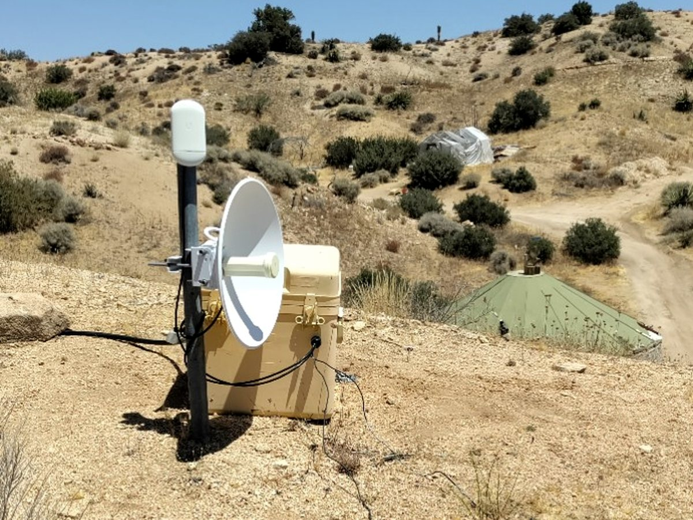

Meshtastic
Solar relays, mobile nodes, base stations, range, and message paths.
Connected Landscape
Meshtastic, amateur radio, GMRS, Ethernet, fiber, Wi-Fi bridges, PoE, cameras, and the paths information takes across the property.

Solar relays, mobile nodes, base stations, range, and message paths.
Amateur and GMRS equipment, antennas, repeaters, and field use.
Backbone links, media converters, switches, and cable routes.
Bridges, mesh access, coverage, dead zones, and remote areas.
One cable carrying both data and power to field equipment.
Remote visibility, cameras, positioning, and controlled power.
Likely Field Report 002
No synopsis will be published until the node, power source, location, and current status are observed together.